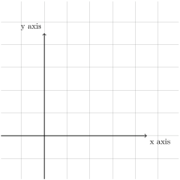

Section 4.1 Code bank and trials
For testing things out.... Also for keeping samples of types of code, for easy copy/pasting.


Right angled triangle. The length of hypothenuse is \(\sqrt{2}\text{.}\) The length of both other sides are \(1\text{.}\)
Checkpoint 4.3. A MyOpenMath problem.
Cross-reference: See (1.2.1) for ... Note: The word "example" or "Checkpoint" etc. is included automatically, so do not type it up. A new term: radical then idx to add an index item. Interactive Graph Activity \amp "and" \lt "less than" \gt "greater than"
Example 4.4. Description of example.
Aside
Note: If the help buttons on the right side block part of the question, click somewhere else in the question to temporarily hide the buttons.
Note: If one of your answers is incorrect and the others correct, all of them will be labelled as incorrect.
Checkpoint 4.5.
Checkpoint 4.6.
Checkpoint 4.7.
Checkpoint 4.8.
Checkpoint 4.10. Simplifying.
Checkpoint 4.11. Answer does not accept rounded numbers.
Referencing an assemblage or similar: such as those listed in Common angles. This gives the title of the assemblage. Can also try text="custom".
| Variable \(x\) | Variable \(y\) | Conjunction \(x\wedge y\) | Disjunction \(x\vee y\) |
|---|---|---|---|
| T | T | T | T |
| T | F | F | T |
| F | T | F | T |
| F | F | F | F |
Checkpoint 4.13. Answer Type Variety.
This problem demonstrates that WeBWorK can process many kinds of answers.
Consider the function \(f\) defined by \(f(x)={\sqrt{x}}\text{.}\)
-
The exact value of \(f(12)\) is and a decimal approximation for this is .
-
The domain of this function, in interval notation, is .
-
\(\frac{d}{dx}{\sqrt{x}}={}\) .
-
The formula for \(f(x)^2\text{,}\) including its restricted domain, is .
-
Which is true of the word “radical”?
-
It shares ancestry with "radius", as in the radius of a circle.
-
It shares ancestry with "radish", a vegetable.
-
Math mode does not seem to work within radio buttons.
-
Checkpoint 4.14. True or False? - HOMEMADE.
(Not randomizable)
Which of the following statements are true, and which are false?